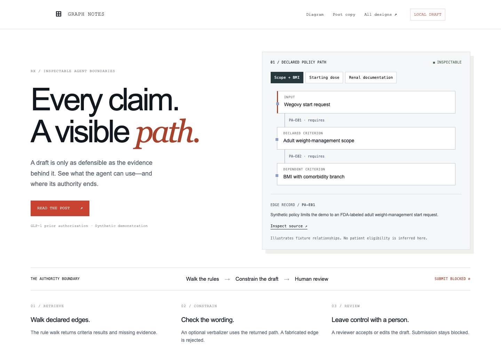

LATEST / RESEARCH V2Every claim.
Every claim.
A visible path.
A stronger composition, an interactive policy path, and a clear human-review boundary.

PREVIOUS / RESEARCH V1
Subtle network
The first DataLab-inspired direction.
WARM EDITORIALPaper and rust
Ivory, serif typography, light graph.
ORIGINAL ALTERNATIVE AEditorial
Writing first, cool paper background.
ORIGINAL ALTERNATIVE BControl room
Dark canvas, diagram first.
ORIGINAL ALTERNATIVE CMaterials studio
A workspace for copy and downloads.
ORIGINALLaunch kit
The initial materials remain available.